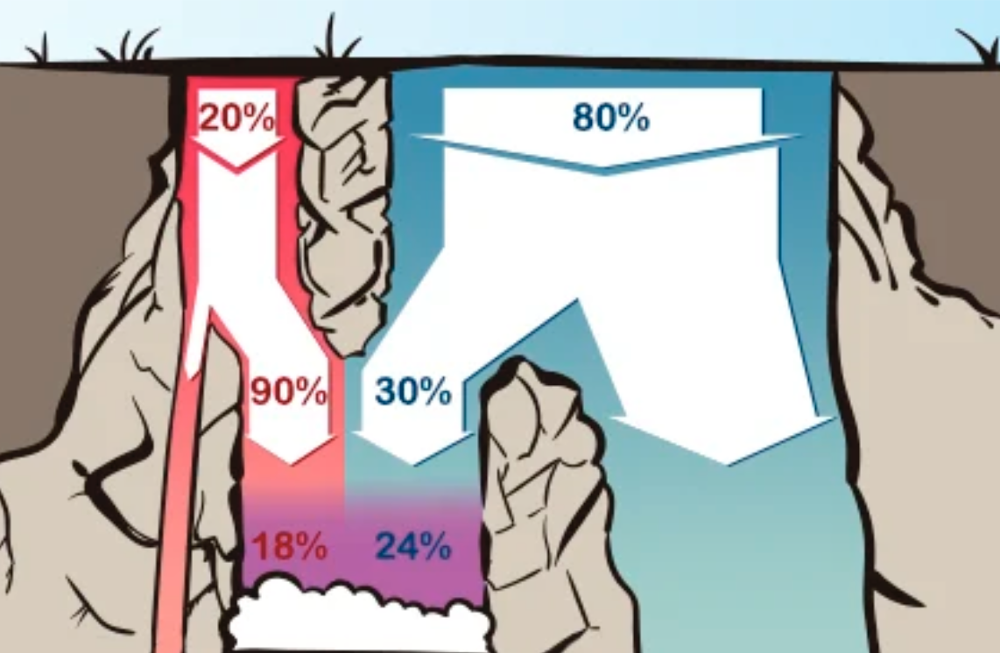

A fellow student tells you they enjoy programming.
How likely is it that they study computer science?
A fellow student says they enjoy programming. The following slides estimate how likely it is that they study computer science, using assumed numbers.
KIT student population
Computer science students
Other students
The square represents all students at KIT. According to the KIT statistics 2025, 12.6% study computer science (blue) and 87.4% do not (green).
KIT student population
The same proportions drawn as columns: a narrow blue one and a wide green one.
KIT student population
The height of each column now shows the share who enjoy programming. Assumed: 95% of computer science students and 10% of all other students.
KIT student population
Under our assumptions, about 58% of students who enjoy programming study computer science.
The coloured areas are all students who enjoy programming. Blue: 12.6% × 95% ≈ 12% of all students. Green: 87.4% × 10% ≈ 9% of all students. Blue's share of the two combined is 12 / (12 + 9) ≈ 58%. The much larger group of other students still accounts for about 42% of students who enjoy programming.
Your Diseasitis test is positive.
20% of the population has Diseasitis.
The test detects Diseasitis 90% of the time.
For healthy people, the test is positive 30% of the time.
How likely is it that you have Diseasitis?
Assumed: 20% of the population has Diseasitis, the test is positive for 90% of people who have it and for 30% of people who don't. True positives: 0.2 × 0.9 = 0.18 of the population. False positives: 0.8 × 0.3 = 0.24. The probability of having Diseasitis given a positive test is 0.18 / (0.18 + 0.24) ≈ 43%.
Your Diseasitis test is positive.

A waterfall diagram splits the population first by whether people have Diseasitis, then by test result. Among all positive tests, 0.18 of 0.42 come from people who have it, about 43%. Diagram from The LessWrong guide to Bayes' Theorem .
Your smoke alarm starts beeping.
How likely is a fire on any given day?
How likely is the alarm to beep if there is a fire?
How likely is the alarm to beep if there is no fire?
How likely is it that there is a fire?
The four quantities needed here: how likely a fire is on a given day (the prior), how likely the alarm beeps if there is a fire, how likely it beeps if there is none, and, as the quantity we want, how likely there is a fire given the beep.
Let's express it as a formula.
$$ P(A \vert B) = \frac{P(B \vert A) \cdot P(A)}{P(B)} $$
P(A|B) is read as "the probability of A given B". It is not the same as P(B|A): the probability that a sick person tests positive differs from the probability that a person with a positive test is sick.
Let's express it as a formula.
$$ P(H \vert e) = \frac{P(e \vert H) \cdot P(H)}{P(e)} $$
H stands for the hypothesis, e for the evidence. P(H) is the probability of the hypothesis before seeing the evidence (the prior). P(e|H) is how likely the evidence is if the hypothesis is true. P(H|e) is the updated probability after seeing the evidence.
Let's express it as a formula.
$$ P(H \vert e) =
\frac{P(e \vert H) \cdot P(H)}
{P(e \vert H) \cdot P(H) + P(e \vert \neg H) \cdot P(\neg H)} $$
The probability of the evidence, P(e), can be split into the two ways it can occur: with the hypothesis true, P(e|H) · P(H), and with it false, P(e|¬H) · P(¬H). In the squares and the waterfall diagram this is the sum of the blue and the green area.
Your new computer is loud.
2% of new computers have a broken fan.
80% of computers with a broken fan are loud.
5% of computers with a working fan are loud.
How likely is it that your computer has a broken fan?
Assumed: 2% of new computers have a broken fan. 80% of computers with a broken fan are loud. 5% of computers with a working fan are loud.
Your new computer is loud.
The square represents all new computers. The blue sliver is the 2% with a broken fan, drawn to scale.
Your new computer is loud.
Under our assumptions, only about 25% of loud computers have a broken fan.
Each group is reduced to its loud share. Broken: 2% × 80% = 1.6% of all computers. Working: 98% × 5% = 4.9%. Of the 6.5% of computers that are loud, 1.6 / 6.5 ≈ 25% have a broken fan. Working computers are so much more common that their low rate of being loud still produces more loud computers than broken ones do.
Your new computer is loud.
$$ P(H \vert e) = \frac{P(e \vert H) \cdot P(H)}{P(e)} $$
The general formula, applied to this example.
Your new computer is loud.
$$ P(\text{broken} \vert \text{loud}) =
\frac{P(\text{loud} \vert \text{broken}) \cdot P(\text{broken})}
{P(\text{loud})} $$
The hypothesis H is "broken fan", the evidence e is "loud".
Your new computer is loud.
$$ P(\text{b} \vert \text{l}) =
\frac{P(\text{l} \vert \text{b}) \cdot P(\text{b})}
{P(\text{l})} $$
Abbreviated: b for broken, l for loud.
Your new computer is loud.
$$ P(\text{b} \vert \text{l}) =
\frac{P(\text{l} \vert \text{b}) \cdot P(\text{b})}
{P(\text{l} \vert \text{b}) \cdot P(\text{b})
+ P(\text{l} \vert \neg \text{b}) \cdot P(\neg \text{b})} $$
The denominator expanded into loud and broken, plus loud and not broken (¬b).
Your new computer is loud.
$$ P(\text{b} \vert \text{l}) =
\frac{0.8 \cdot 0.02}{0.8 \cdot 0.02 + 0.05 \cdot 0.98} $$
$$ P(\text{b} \vert \text{l}) =
\frac{0.016}{0.016 + 0.049}
= \frac{0.016}{0.065} $$
$$ P(\text{broken} \vert \text{loud}) \approx 25\% $$
0.8 × 0.02 = 0.016 and 0.05 × 0.98 = 0.049, so P(broken | loud) = 0.016 / (0.016 + 0.049) = 0.016 / 0.065 ≈ 25%, matching the squares.
One more example, this time from fiction.
It introduces a second way to write the formula: odds.
The next example is used to introduce the odds form of Bayes' Theorem, which is the same formula written as ratios.
The Death Eaters still bear the Dark Mark.
How likely is it that Voldemort is still alive?
This example is from Eliezer Yudkowsky's Harry Potter and the Methods of Rationality , chapter 86 . There, Snape argues that the Dark Mark has not faded, so Voldemort must still be alive, and Harry responds that this is weak evidence.
Expressed as odds.
$$\begin{array}{l r c l}
\text{Prior odds} & A & : & B \\
\times \; \text{Likelihood ratio} & a & : & b \\
\hline
\text{Posterior odds} & Aa & : & Bb
\end{array}$$
Odds form of the theorem: prior odds × likelihood ratio = posterior odds. This avoids computing the denominator P(e).
Expressed as odds.
$$\begin{array}{l r c l}
\text{Prior odds} & 1 & : & 100 \\
\times \; \text{Likelihood ratio} & 100 & : & 20 \\
\hline
\text{Posterior odds} & 100 & : & 2000
\end{array}$$
Prior odds: 1 : 100 (alive : dead). Likelihood ratio: 100 : 20 (100% if alive, 20% if dead). Product: 100 : 2000.
Expressed as odds.
$$\begin{array}{l r c l}
\text{Prior odds} & 1 & : & 100 \\
\times \; \text{Likelihood ratio} & 5 & : & 1 \\
\hline
\text{Posterior odds} & 1 & : & 20
\end{array}$$
100 : 20 is the same as 5 : 1. Then 1 : 100 × 5 : 1 = 5 : 100 = 1 : 20. The probability of being alive rises from 1 in 101 (about 1%) to 1 in 21 (about 5%).
Careful!
Garbage in → garbage out
100% and 0% are "sticky" probabilities
The result is only as reliable as the probabilities that go into it. 0% and 100% correspond to odds of 0 and infinity; multiplying these by any finite likelihood ratio leaves them unchanged, which is why they are "sticky".
What does 100% certain mean?
No observation can move you away from 100% or 0% certainty.
No observation can bring you to 100% or 0% certainty.
Since 0% and 100% cannot be changed by evidence, a belief held with that certainty cannot be updated. Evidence can also never bring a belief to 0% or 100%.
Between 99.999% and 100% certainty lies an infinity of evidence.
Every piece of evidence multiplies the odds by a fixed factor. Going from 99.999% to 100% would take infinitely many such steps.
Inspired by...
These are the sources and explanations I learned from.